| id_question | couple | color | |
|---|---|---|---|
| 1 | 13 | 6.13 | BN |
| 3 | 15 | 8.15 | BN |
| 6 | 17 | 10.17 | BN |
| 7 | 14 | 7.14 | BN |
| 11 | 19 | 12.19 | BN |
| 12 | 16 | 9.16 | BN |
| 2 | 12 | 12.19 | Color |
| 4 | 6 | 6.13 | Color |
| 5 | 9 | 9.16 | Color |
| 8 | 10 | 10.17 | Color |
| 9 | 7 | 7.14 | Color |
| 10 | 8 | 8.15 | Color |
Analisi matrici \(2 \times2\)
Introduzione
In questo file sono riportate alcune analisi effettuate sulle matrici \(2\times 2\) dei bambini, in particolare considerando le coppie di matrici colorate:
I dati sono del 26 Marzo e contengono le osservazioni su 422. Relativamente alle scolarità:
| anni_scolarita | n | new.scol |
|---|---|---|
| 0 | 138 | YY |
| 2 | 99 | Y |
| 3 | 79 | Y |
| 4 | 46 | Y |
| 5 | 60 | Y |
Per le analisi più avanti faccio riferimento alla nuova categorizzazione di scuola “YY” (prescolari) vs “Y” (tutti gli altri bambini).
Tempi di risposta
Confronto tempi di risposta per ogni coppia di item considerando la scolarità
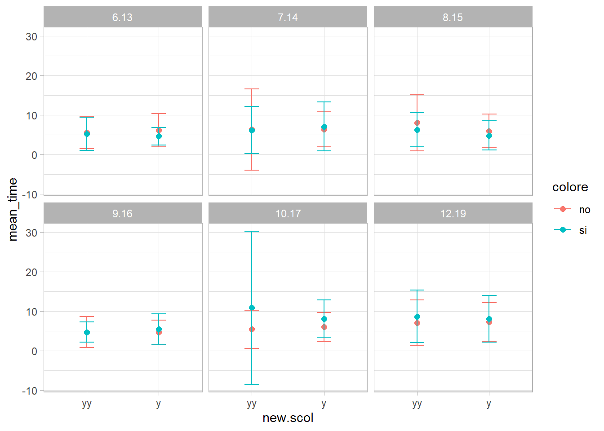
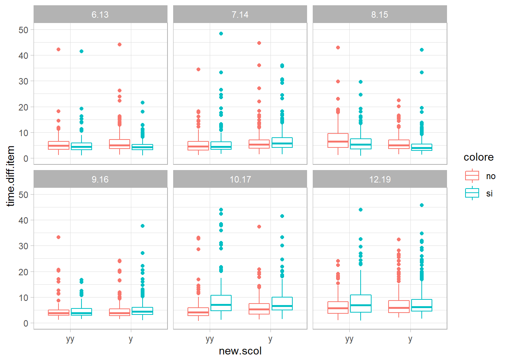
Tempi di risposta ed accuratezze
Sull’asse delle y sono riporate le matrici ordinate dalla più difficile (bottom) alla più facile (top), sull’asse delle x sono riportati i tempi ad ogni matrice. I bambini prescolari (yy) sono riportati in rosa, quelli scolari (Y) sono riportati in azzurro mentre i diversi simboli identificano le coppie di matrici. Le etichette delle matrici riportate in grassetto indicano che la matrice in questione è colorata.
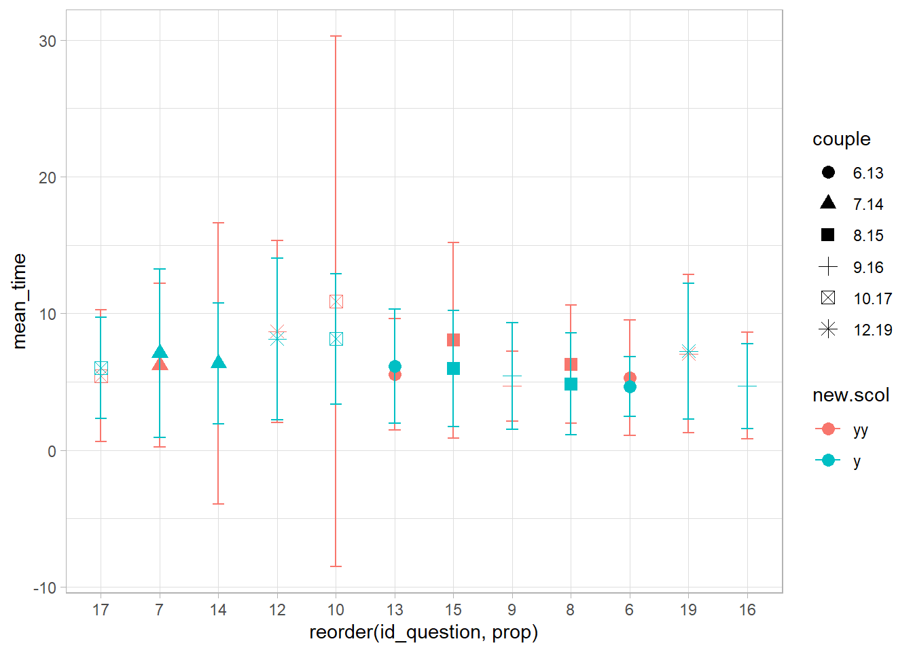
Distrattori
Ho focalizzato l’attenzione sui distrattori per cercare di capire se effettivamente la scelta di un distrattore piuttosto che un altro può cambiare in base alla presenza del colore.
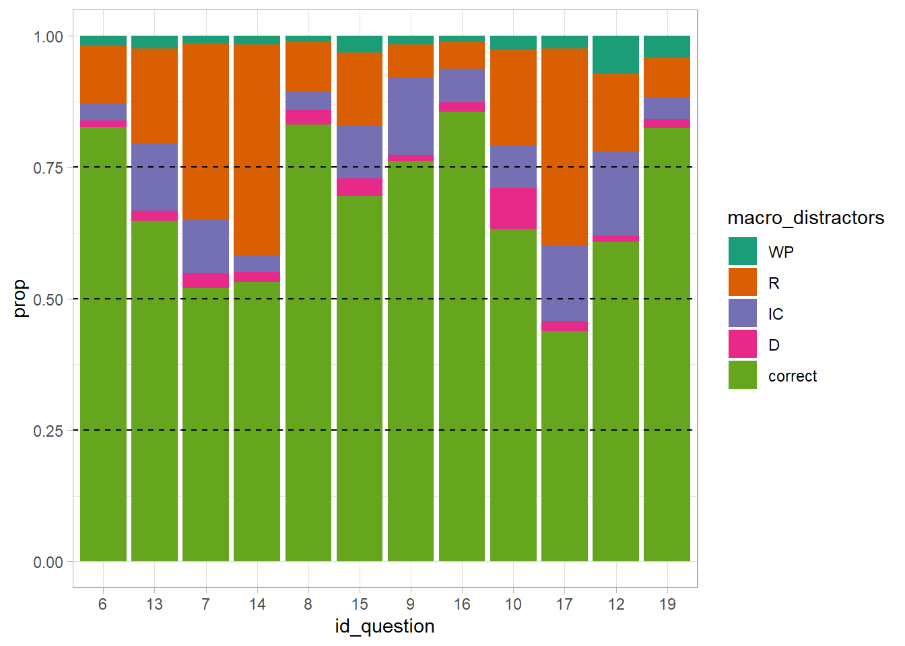
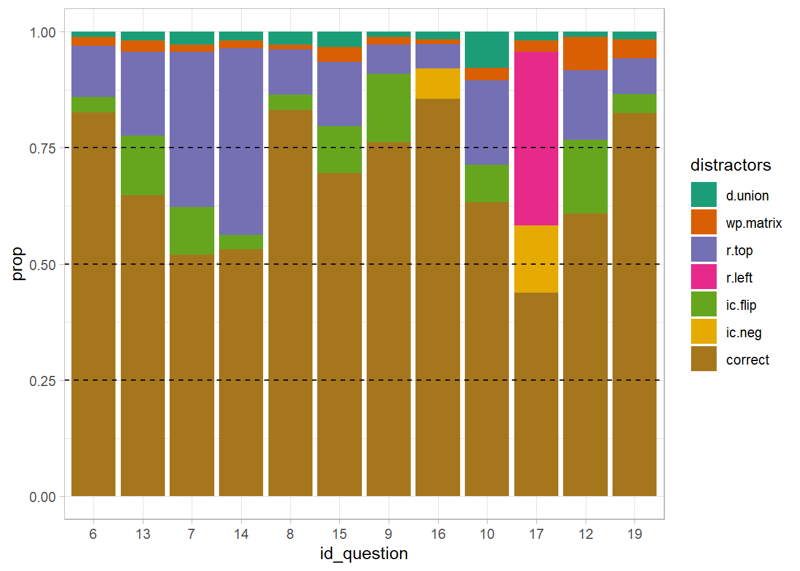
Nei grafici che seguono ho tolto la risposta corretta
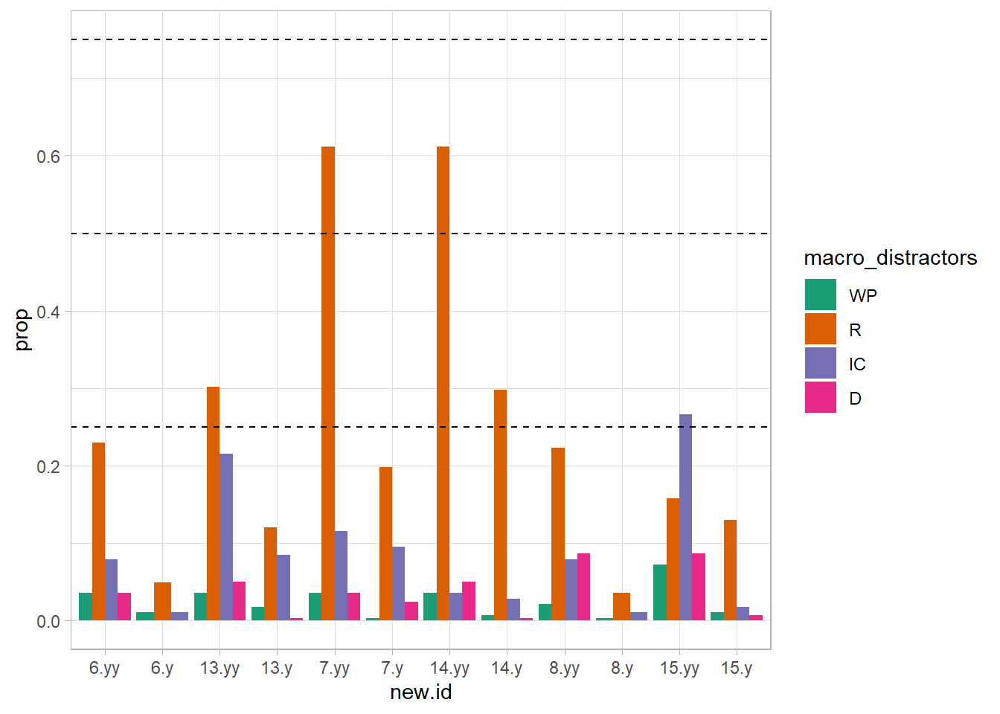
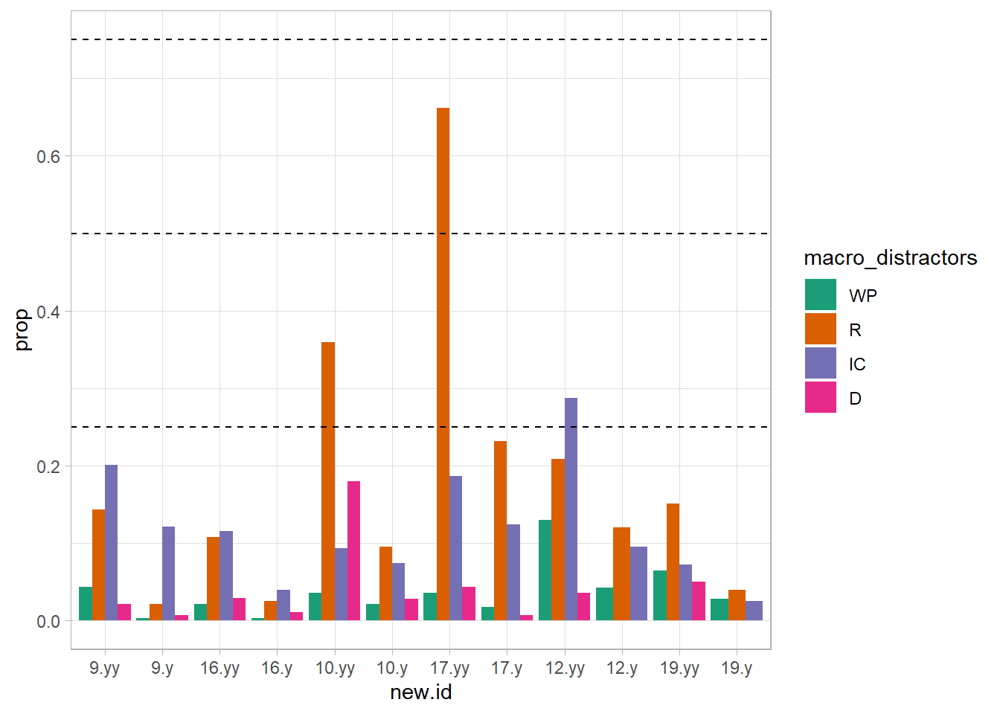
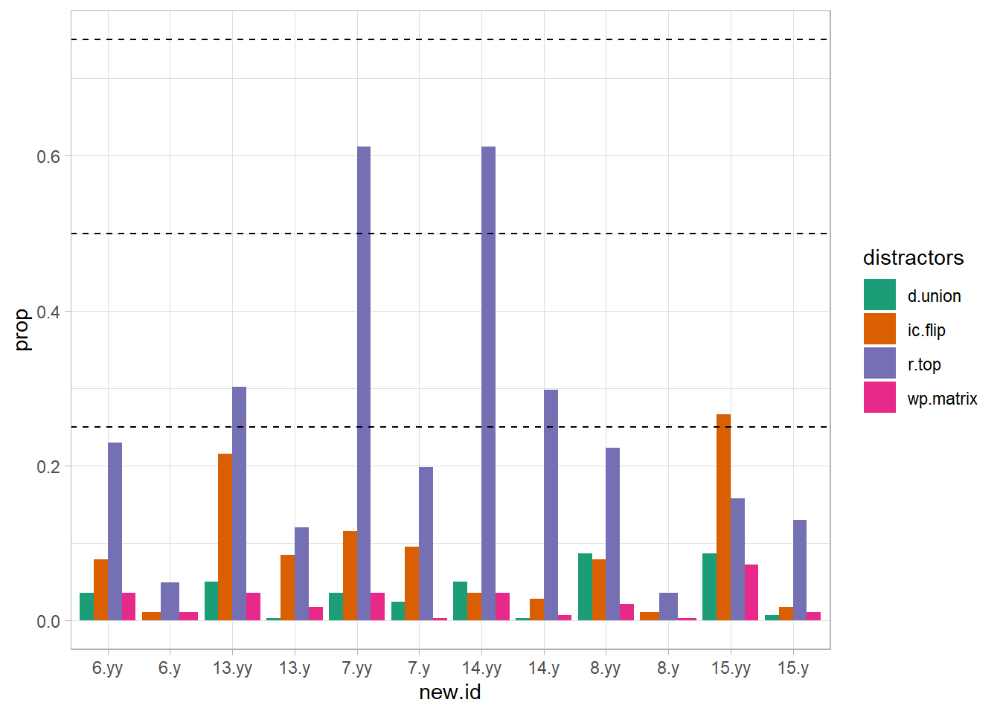
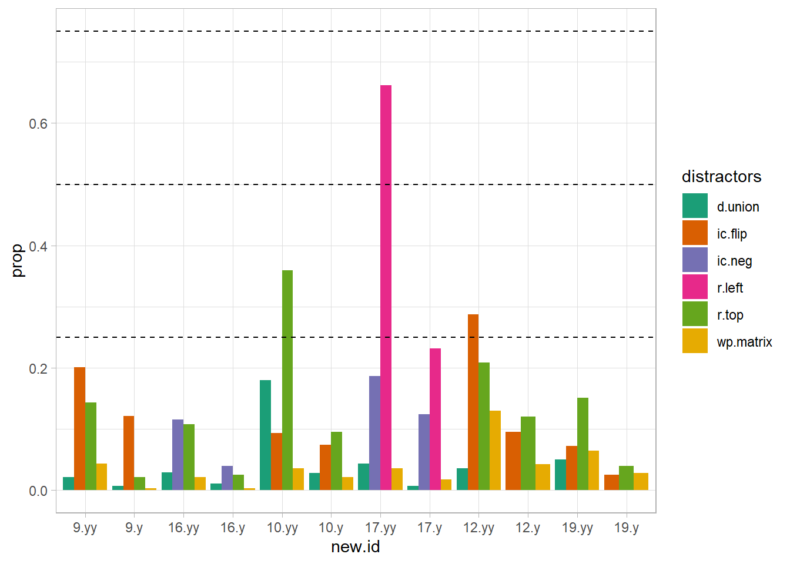
Analisi Differential Item Functioning
Ho preso solo gli item che costituiscono le coppie e ho stimato il modello di Rasch. Sulla base dei risulttai del modello, ho stimato il possibile Differential Item Functioning tra il gruppo di bambini prescolari (YY) e gli altri bambini.
Fit del modello
| maxX2 | Npairs | p.holm |
|---|---|---|
| 22.33183 | 66 | 0.0001514 |
| X100.MADCOV | SRMR | SRMSR | MADaQ3 | pmaxX2 |
|---|---|---|---|---|
| 1.154488 | 0.059155 | 0.0761548 | 0.0601698 | 0.0001514 |
Nonostante il chi quadro sia significativo, non ha una fit pessima.
mentre secondo il chi quadro:
**** Calculate Residuals
**** Calculate Counts
**** Calculate Covariances item index p p.holm
3 items.7 3 1.144823e-11 1.373788e-10
4 items.14 4 1.144823e-11 1.373788e-10Dipendenza locale:
col row val
6 items.14 items.7 0.2633171
19 items.9 items.14 -0.2029468
52 items.12 items.9 -0.2195817I parametri
NB: Il grafico che segue ha il solo scopo di evidenziare la posizione sul tratto latente dei diversi item, ma il modello è stato fittato considerando tutti gli item insieme.
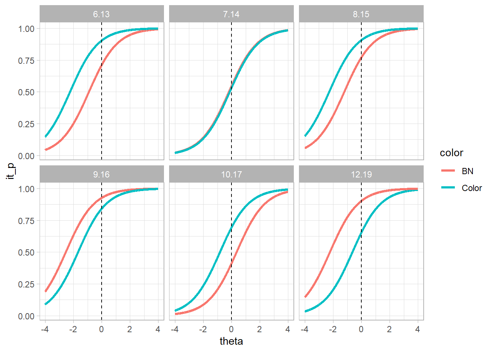
DIF analysis (Lord)
Calcolo il delta di Lord e considero il gruppo Y (i bambini scolari) come gruppo reference
Posso prendere due strade:
Faccio l’analisi DIF “ignorando” il fatto che ci sono item con dipendenza locale (STRADA 1)
Pulisco prima gli item che non funzionano bene e poi faccio l’analisi DIF (STRADA 2)
Faccio entrambe le cose
Strada 1
| LordChi | p.adj | bF | se.b. | bR | se.b..1 | dif | deltaLord | |
|---|---|---|---|---|---|---|---|---|
| items.6 | 0.41 | 0.645 | -2.86 | 0.21 | -3.07 | 0.26 | 0.21 | -0.49 |
| items.13 | 1.28 | 0.441 | -1.79 | 0.21 | -1.49 | 0.17 | -0.30 | 0.71 |
| items.7 | 0.38 | 0.645 | -0.72 | 0.24 | -0.90 | 0.15 | 0.18 | -0.42 |
| items.14 | 1.48 | 0.441 | -1.14 | 0.22 | -0.81 | 0.15 | -0.33 | 0.77 |
| items.8 | 4.42 | 0.142 | -2.72 | 0.21 | -3.48 | 0.30 | 0.76 | -1.78 |
| items.15 | 0.03 | 0.861 | -1.90 | 0.21 | -1.95 | 0.19 | 0.05 | -0.11 |
| items.9 | 5.90 | 0.091 | -2.72 | 0.21 | -2.04 | 0.19 | -0.68 | 1.60 |
| items.16 | 2.26 | 0.398 | -3.43 | 0.22 | -2.94 | 0.25 | -0.50 | 1.17 |
| items.10 | 0.03 | 0.861 | -1.50 | 0.21 | -1.55 | 0.17 | 0.05 | -0.11 |
| items.17 | 9.38 | 0.026 | 0.58 | 0.35 | -0.59 | 0.15 | 1.17 | -2.76 |
| items.12 | 0.80 | 0.555 | -1.50 | 0.21 | -1.26 | 0.16 | -0.24 | 0.56 |
| items.19 | 1.36 | 0.441 | -3.08 | 0.21 | -2.72 | 0.23 | -0.36 | 0.86 |
Graficamente:
SUll’asse delle x sono riportati i parametri di difficoltà degli item, sull’asse delle y l’etichetta identificativa della coppia, mentre i colori identificano i due gruppi di età (rosa i bambini scolari, azzurri i bambini prescolari). I due pannelli indicano se la matrice è in BN (no) oppure colorata (Si)
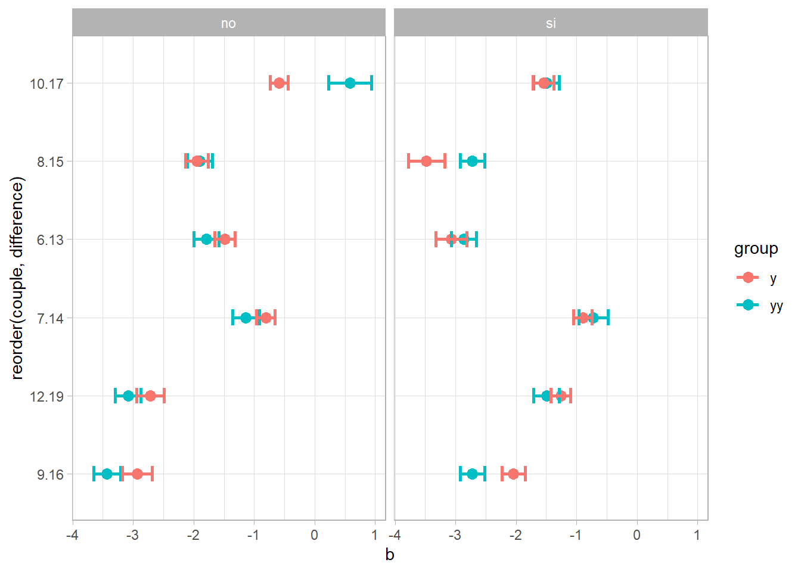
Ad esclusione della coppia 9.16, dove la matrice colorata è più difficile per i bambini scolari che epr i bamnini prescolari, nelle coppie 10.17 e 8.15 (le altre coppie dove può esserci una differenza significativa) le matrici sono più facili per i bambini scolari. Nota che nella coppia 9.16, la matrice tende ad essere più semplice per i bambini prescolari.
Strada 2
Prima cosa: Togliere gli item che non funzionano bene:
col row val
6 items.14 items.7 0.2633171
19 items.9 items.14 -0.2029468
52 items.12 items.9 -0.2195817Tolgo l’item 14 perché è lui quello che disturba di più e rifitto il modello. Per questa tabelle e le prossime tabelle dove sono riportate statstiche di fit dei modelli, la prima riga r
| maxX2 | Npairs | p.holm | |
|---|---|---|---|
| m.14 | 14.12706 | 55 | 0.0093978 |
| m.all | 22.33183 | 66 | 0.0001514 |
| X100.MADCOV | SRMR | SRMSR | MADaQ3 | pmaxX2 | |
|---|---|---|---|---|---|
| m.14 | 1.079433 | 0.0568088 | 0.0708253 | 0.0513719 | 0.0093978 |
| m.all | 1.154488 | 0.0591550 | 0.0761548 | 0.0601698 | 0.0001514 |
**** Calculate Residuals
**** Calculate Counts
**** Calculate Covariances [1] item index p p.holm
<0 rows> (or 0-length row.names)Dipendenza locale:
col row val
42 items.12 items.9 -0.2351768Sono due matrici colorate, non facenti parte della stessa coppia. Tolgo la 9 perché è leggermente più facile:
item N M xsi.item AXsi_.Cat1 B.Cat1.Dim1
items.17 items.17 419 0.4391408 0.3509601 0.3509601 1
items.7 items.7 420 0.5214286 -0.1365203 -0.1365203 1
items.12 items.12 420 0.6071429 -0.6429799 -0.6429799 1
items.10 items.10 421 0.6342043 -0.8295795 -0.8295795 1
items.13 items.13 420 0.6476190 -0.9176554 -0.9176554 1
items.15 items.15 416 0.6947115 -1.2230418 -1.2230418 1
items.9 items.9 419 0.7613365 -1.6928380 -1.6928380 1
items.19 items.19 417 0.8249400 -2.2479070 -2.2479070 1
items.6 items.6 420 0.8261905 -2.2660942 -2.2660942 1
items.8 items.8 419 0.8305489 -2.3018028 -2.3018028 1
items.16 items.16 416 0.8557692 -2.5673075 -2.5673075 1| maxX2 | Npairs | p.holm | |
|---|---|---|---|
| m.9 | 8.522699 | 45 | 0.1578348 |
| m.14 | 14.127058 | 55 | 0.0093978 |
| m.all | 22.331835 | 66 | 0.0001514 |
| maxX2 | Npairs | p.holm | |
|---|---|---|---|
| m.9 | 8.522699 | 45 | 0.1578348 |
| m.14 | 14.127058 | 55 | 0.0093978 |
| m.all | 22.331835 | 66 | 0.0001514 |
Ora il modello fitta in tutto e per tutto. controllo la dipendenza locale:
[1] col row val
<0 rows> (or 0-length row.names)Posso investigare la DIF
| LordChi | p.adj | bF | se.b. | bR | se.b..1 | dif | deltaLord | |
|---|---|---|---|---|---|---|---|---|
| items.6 | 0.11 | 0.845 | -2.97 | 0.21 | -3.08 | 0.26 | 0.11 | -0.26 |
| items.13 | 2.27 | 0.271 | -1.89 | 0.21 | -1.49 | 0.17 | -0.40 | 0.95 |
| items.7 | 0.07 | 0.845 | -0.82 | 0.24 | -0.90 | 0.15 | 0.08 | -0.18 |
| items.8 | 3.35 | 0.231 | -2.83 | 0.21 | -3.49 | 0.30 | 0.66 | -1.55 |
| items.15 | 0.04 | 0.845 | -2.00 | 0.21 | -1.94 | 0.19 | -0.05 | 0.13 |
| items.16 | 3.30 | 0.231 | -3.54 | 0.22 | -2.94 | 0.25 | -0.60 | 1.42 |
| items.10 | 0.04 | 0.845 | -1.60 | 0.21 | -1.54 | 0.17 | -0.05 | 0.13 |
| items.17 | 7.85 | 0.051 | 0.49 | 0.35 | -0.59 | 0.15 | 1.07 | -2.52 |
| items.12 | 1.63 | 0.337 | -1.60 | 0.21 | -1.26 | 0.16 | -0.34 | 0.80 |
| items.19 | 2.23 | 0.271 | -3.19 | 0.21 | -2.72 | 0.23 | -0.47 | 1.10 |
Graficamente:
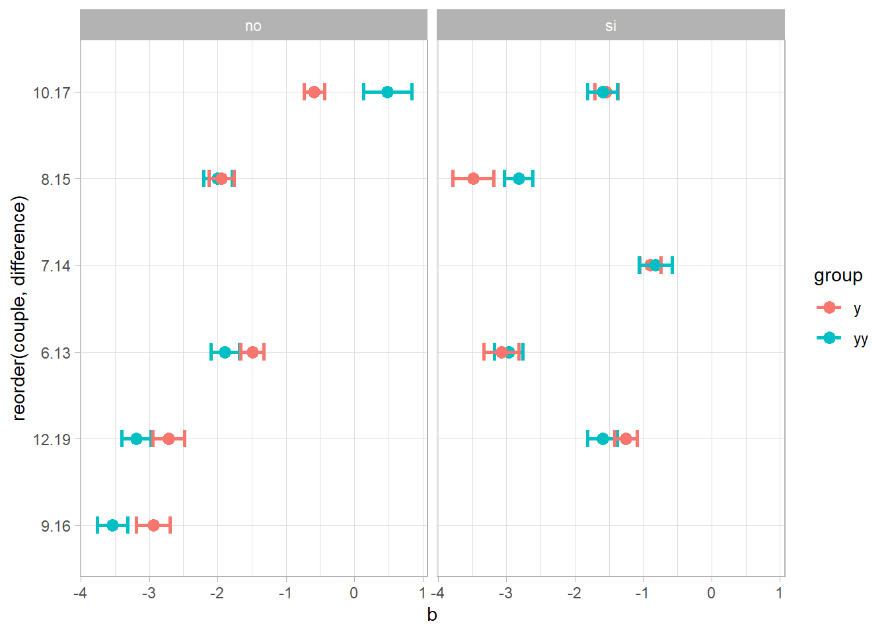
Strada 2 bis
Per scrupolo, voglio vedere cosa succedo se elimino l’item 7
| maxX2 | Npairs | p.holm | |
|---|---|---|---|
| m.7 | 13.43125 | 55 | 0.0136107 |
| m.all | 22.33183 | 66 | 0.0001514 |
| X100.MADCOV | SRMR | SRMSR | MADaQ3 | pmaxX2 | |
|---|---|---|---|---|---|
| m.7 | 1.122755 | 0.0594641 | 0.0748610 | 0.0559242 | 0.0136107 |
| m.all | 1.154488 | 0.0591550 | 0.0761548 | 0.0601698 | 0.0001514 |
**** Calculate Residuals
**** Calculate Counts
**** Calculate Covariances [1] item index p p.holm
<0 rows> (or 0-length row.names)Dipendenza locale:
col row val
42 items.12 items.9 -0.2353237Sono due matrici colorate (e stesse due che ottengo togliendo l’item 14), non facenti parte della stessa coppia. Rimango dell’idea che sia meglio togliere la 9 perché è leggermente più facile:
item N M xsi.item AXsi_.Cat1 B.Cat1.Dim1
items.17 items.17 419 0.4391408 0.3470297 0.3470297 1
items.14 items.14 420 0.5333333 -0.1977643 -0.1977643 1
items.12 items.12 420 0.6071429 -0.6357620 -0.6357620 1
items.10 items.10 421 0.6342043 -0.8190297 -0.8190297 1
items.13 items.13 420 0.6476190 -0.9040221 -0.9040221 1
items.15 items.15 416 0.6947115 -1.2089881 -1.2089881 1
items.9 items.9 419 0.7613365 -1.6709376 -1.6709376 1
items.19 items.19 417 0.8249400 -2.2199297 -2.2199297 1
items.6 items.6 420 0.8261905 -2.2387335 -2.2387335 1
items.8 items.8 419 0.8305489 -2.2746546 -2.2746546 1
items.16 items.16 416 0.8557692 -2.5358045 -2.5358045 1| maxX2 | Npairs | p.holm | |
|---|---|---|---|
| m.9 | 9.312936 | 45 | 0.1023937 |
| m.7 | 13.431253 | 55 | 0.0136107 |
| m.all | 22.331835 | 66 | 0.0001514 |
| X100.MADCOV | SRMR | SRMSR | MADaQ3 | pmaxX2 | |
|---|---|---|---|---|---|
| m.9 | 1.071934 | 0.0569354 | 0.0697633 | 0.0541341 | 0.1023937 |
| m.7 | 1.122755 | 0.0594641 | 0.0748610 | 0.0559242 | 0.0136107 |
| m.all | 1.154488 | 0.0591550 | 0.0761548 | 0.0601698 | 0.0001514 |
Ora il modello fitta in tutto e per tutto. controllo la dipendenza locale:
[1] col row val
<0 rows> (or 0-length row.names)Posso investigare la DIF
| LordChi | p.adj | bF | se.b. | bR | se.b..1 | dif | deltaLord | |
|---|---|---|---|---|---|---|---|---|
| items.6 | 0.22 | 0.802 | -2.92 | 0.21 | -3.07 | 0.26 | 0.15 | -0.36 |
| items.13 | 1.72 | 0.316 | -1.84 | 0.21 | -1.49 | 0.17 | -0.35 | 0.82 |
| items.14 | 1.90 | 0.316 | -1.18 | 0.22 | -0.81 | 0.15 | -0.37 | 0.88 |
| items.8 | 3.82 | 0.253 | -2.77 | 0.21 | -3.48 | 0.30 | 0.71 | -1.66 |
| items.15 | 0.00 | 1.000 | -1.95 | 0.21 | -1.95 | 0.19 | 0.00 | 0.00 |
| items.16 | 2.86 | 0.302 | -3.49 | 0.22 | -2.93 | 0.25 | -0.56 | 1.32 |
| items.10 | 0.00 | 1.000 | -1.54 | 0.21 | -1.55 | 0.17 | 0.00 | 0.00 |
| items.17 | 8.73 | 0.031 | 0.54 | 0.35 | -0.59 | 0.15 | 1.13 | -2.66 |
| items.12 | 1.13 | 0.412 | -1.54 | 0.21 | -1.26 | 0.16 | -0.28 | 0.67 |
| items.19 | 1.83 | 0.316 | -3.14 | 0.21 | -2.71 | 0.23 | -0.42 | 0.99 |
C’è qualcosa che non va nella stima dei parametri
Graficamente:

Mi convince di più l’altra soluzione perché è più equilibrata (tolgo una colorata e una bn) e soprattutto le stime dei parametri hanno più senso.